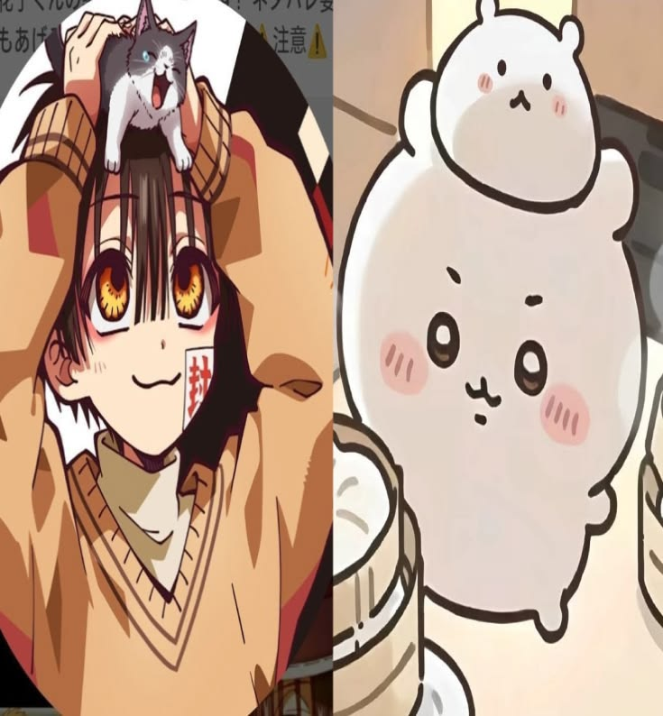
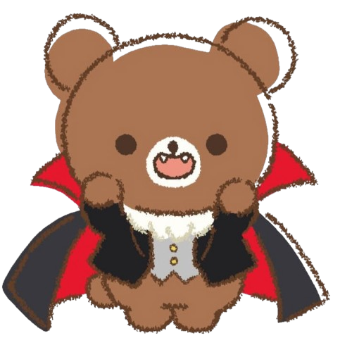

Hanako-kun
花子くん / Yugi Amane
I just love him. I know he's a murderer but he lowkey killed a monster so yk did everyone a favor. Our thoughtful kind <3

my raging obssession with TBHK

花子くん / Yugi Amane
I just love him. I know he's a murderer but he lowkey killed a monster so yk did everyone a favor. Our thoughtful kind <3